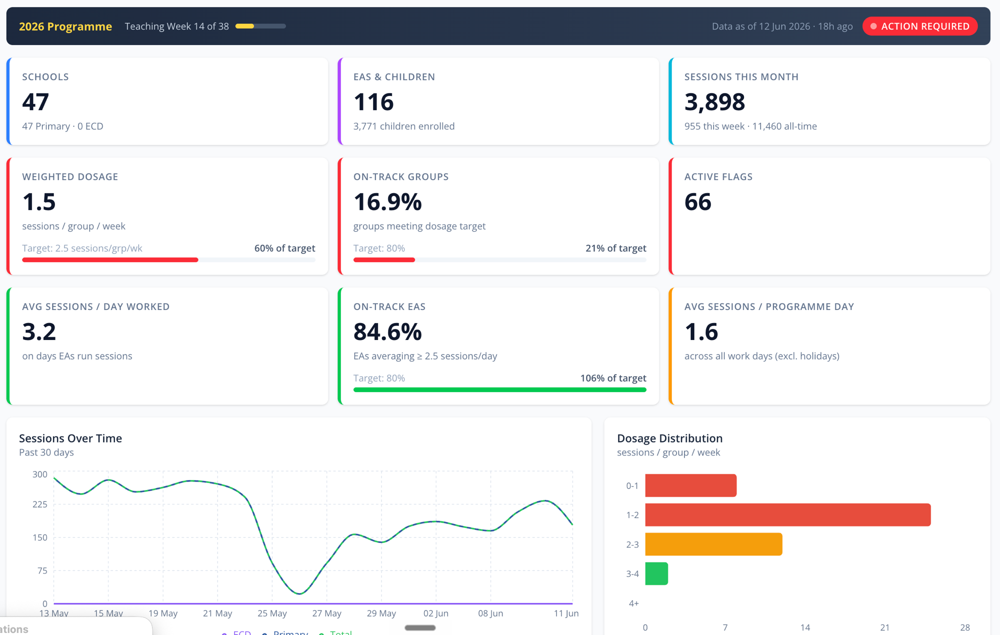
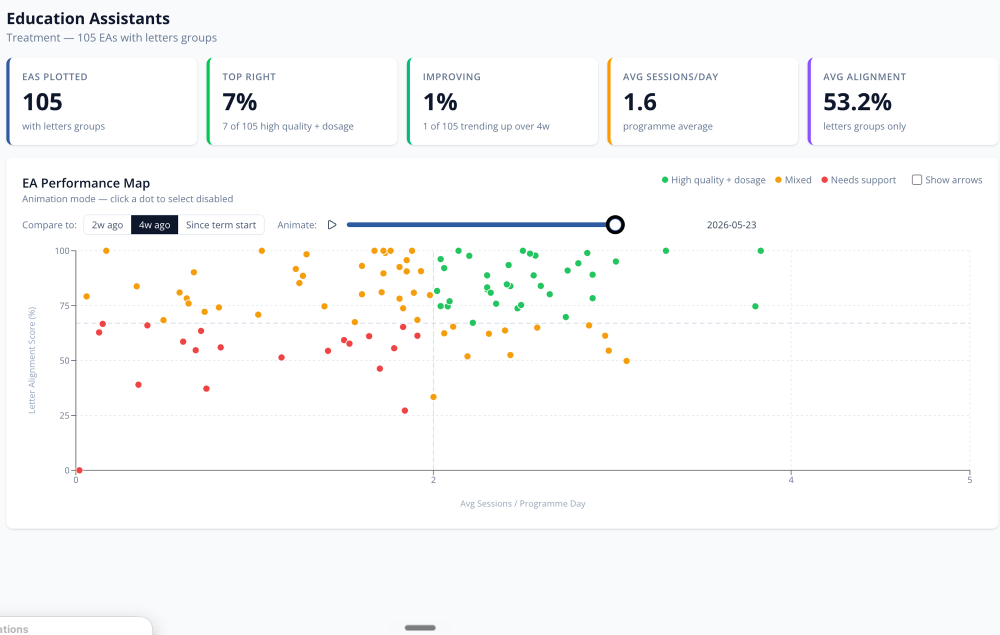

Mockup v2: /impact/measurement — de-templated: no equal-card rows, redesigned triangle, engine room as a real stack, NEW apps + AI sections, and your actual Zazi dashboards embedded.
masinyusane.org/impact/measurement
1Hero — cards replaced by one quiet pulse line
Monitoring, Evaluation & Data
We measure learning, not just activity.
Daily session logs, formal assessments, and mentor observations — triangulated for every child, every week. This page explains how the numbers on our impact dashboard are made, checked, and challenged.
Sessions synced nightlyThree assessment rounds per child, per yearMentors in classrooms weekly
2Evidence triangle — streams merged in
The system
Each stream checks the other two.
High session counts with low learning gains? Mentor observations tell us whether the problem is pace, group composition, or fidelity. Strong assessment results? Session logs confirm the dosage that produced them.
When two fully independent measurement methods agree, we trust both more.
Letters Known × EGRA improvement: ρ = 0.93
3The loop — boxes → flowing line
Collect
captured digitally in classrooms
Clean
nightly syncs, validation, flags
Analyze
child to school level
Coach
mentors act on what data shows
Adapt
groups, pacing, pilots
Report
verified, published
The point of measurement is the coaching conversation days after the data lands — not the report at the end of the year. The loop repeats weekly during the school year.
4Framework + child radar merged
What we measure
Every skill that makes a reader — and a counter.
Literacy — 11 skills per child
EGRA-anchored, assessed three times a year
Letter sounds /minStory comprehensionFirst soundsListen: wordsWrite lettersRead wordsRead sentencesRead storyWrite CVCsWrite sentencesWrite story
Numeracy — 9 components
Yazi Amanani assessment, standardised to /10 per component
Counting aloudNumber recognitionCounting & matchingWrite numbersMore / less thanMissing numbersSums to 10Word problemsAdd / subtract
What that looks like for one child
JanuaryNovember
We hold a chart like this for every child on programme — improvement reported four ways: raw points, standardised (0–10), percent change, learning gain %.
5Benchmarks — table leads, copy follows
Benchmark
Target
Why it matters
isiXhosa Gr 1 letter sounds
40 / min
The reading-readiness threshold
isiXhosa Gr 2 passage
20 wpm
First fluency milestone
isiXhosa Gr 3 passage
35 wpm
Reading to learn begins
English Gr 2 passage
30 wpm
FAL fluency baseline
English Gr 3 passage
50 wpm
On track for Gr 4 switch
English Gr 4 passage
70 wpm
Full curriculum access
The bar we measure against
National benchmarks, by language and grade.
We don't grade our own homework. Every result is measured against South Africa's published early-grade reading benchmarks — and the Grade 1 letter-sound benchmark is the one that decides reading futures.
6Engine room v2 — capability stack
The engine room
A real data system, built layer by layer.
Most nonprofits collect data. Very few engineer it. Every layer below replaced manual work with code — and made the numbers faster, cleaner, and harder to fudge.
Layer 01 — CaptureMobile apps in classrooms
Coaches and mentors log sessions, assessments and visits on phones, offline-first, synced the same night.
TeamPactSurveyCTO
Layer 02 — StoreDatabase backbone
Production tables for every assessment, session and mentor visit — one source of truth, synced nightly via API.
PostgreSQLREST APIs
Layer 03 — VerifyQuality & fidelity scripts
Automated checks flag implementation drift — pacing too fast, undifferentiated groups, missing data — before it reaches results.
Python
Layer 04 — AnalyzeAdvanced analytics
Matched-cohort gains, benchmark movement, treatment-comparison designs, correlation across independent measures.
Pythonpandas
Layer 05 — RecommendAI integrations
Models read each group's session history and suggest next steps to coaches — humans decide, AI prepares.
LLM agents
Layer 06 — SeeLive dashboards
Operations, assessment and coaching dashboards used daily by programme teams — shown below.
StreamlitNext.js
Tech labels to be confirmed — exact stack naming (TeamPact / SurveyCTO / Postgres / agent tooling) needs Jim's sign-off before publication.
7NEW — mobile apps
Layer 01, up close
Built for a classroom, not an office.
Data quality starts where data is born. Our apps are designed for coaches standing in classrooms — fast, offline-first, structured so the right data is the easy data to enter.
Session logging in under a minute: letters taught, attendance, group
One-minute EGRA letter timer built into assessment capture
Mentor visit scoring with action items that route to follow-up
Works offline in no-signal schools; syncs the same night
Session Log
Group B-12 · Kwazakhele Primary
Today's letters
e
a
s
i
m
Attendance
9 / 10
Save session
Letter Assessment
Amahle M. · 0:42 remaining
Letters correct
23
u
b
k
o
t
Last assessment
14 lcpm
placeholder UI — drop in real app screenshots
8NEW — AI integrations
Layer 05, up close
AI that reads 60 sessions so a mentor doesn't have to.
Before a mentor walks into a school, our tools have already read every session log and assessment for the groups she'll visit — and drafted what to look for.
Humans decide; AI prepares. Every recommendation is reviewed by the mentor who knows the coach and the children. Nothing is automated into a classroom.
Coach assistant — pre-visit briefgenerated 06:14, reviewed by mentor
Group B-12 · read from 61 session logs
Six weeks on e, a, s, i with strong attendance (92%). Letter m introduced twice but never reviewed. Pace slowed after mid-May.
Assessment signal
Three children still below 10 letters/min while four are above 30 — the group has split into two ability bands.
Suggested focus for this visit
Observe whether m gets review rotation; discuss splitting the group into two ability bands; re-run the letter check on the three lagging children before Friday.
Sources: sessions_2026 · assessments_2026 · mentor_visits_2026illustrative example
9NEW — the real dashboards
Layer 06, up close
The dashboards our team opens every morning.
Not mock-ups — these are live screens from our Zazi iZandi programme management system, June 2026. Funders get curated views; our team gets everything.
zazi.masinyusane.org / operations

/ ea-performance

Live operationsTeaching week 14 of 38: dosage against target, on-track groups, active quality flags — refreshed nightly, red when it needs to be.
Coaching targetsEvery education assistant plotted by session rate and quality score, animated over time — so mentors know exactly where support goes next.
10Quality + privacy + agenda collapsed
Kept honest
A system designed to catch its own problems.
We flag our own implementation issues first.
Automated checks run across session data, flagging patterns that reduce learning quality before they show up in results.
Example: a coach advancing groups to new letters with no review built in — caught by the "moving too fast" flag, resolved through a mentor visit that week, not a report at year end.
Children's privacy is a design constraint, not a policy PDF.
Public dashboards are aggregate and anonymized. Names and sensitive fields are masked in every unauthenticated view; detailed records sit behind role-based access. POPIA compliance is checked before anything is published.
Open questions we're testing
01
Early start
How much of the Grade 1 gap can ECD close before school begins?
02
Model intensity
Full-time vs part-time coaches: where is the learning-per-rand frontier?
03
Government scale
Do results hold when delivery runs through provincial teaching assistants?
11Explore
See the system for yourself.
Impact dashboardThe results this system produces.
/impact →
Live data portalThe same dashboards our team uses daily.
data.masinyusane.org →
Annual reportsAudited results, year by year.
View reports →
Due-diligence packMethodology, data dictionary, evaluation designs.
Request pack →
Needs from Jim before this page is final: real mobile-app screenshots (section 7) · confirm tech-stack labels (section 6) · confirm the AI example is representative and publishable (section 8) · permission to show these dashboard screenshots publicly, or swap for donor-safe equivalents (section 9). Dropped from v1: standalone streams cards, pulse cards, phase timeline — all merged or replaced.